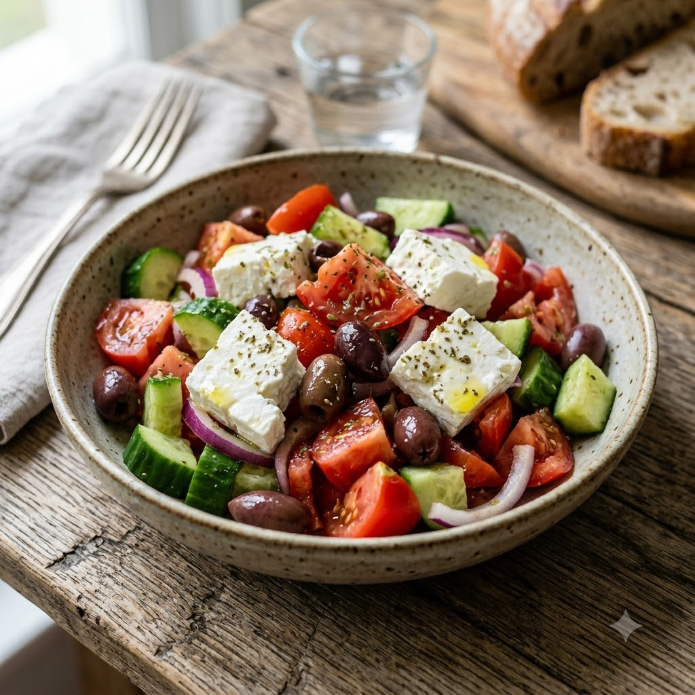

Greek Salad

Greek Salad
No-Cook — 10 min — Serves 4
Gluten-Free • Vegetarian • No-Cook • Mediterranean • Healthy
🍽 Serves 4
Ingredients
- 2 tomatoes, chopped into wedges
- 1 cucumber, sliced
- 1/2 red onion, thinly sliced
- 1/2 cup Kalamata olives
- 150g feta, cubed
- 3 tbsp olive oil
- 1 tbsp red wine vinegar
- 1 tsp dried oregano
- Salt & pepper to taste
Method
1Combine tomatoes, cucumber, red onion and olives in a bowl.
2Whisk olive oil, red wine vinegar, oregano, salt and pepper; pour over the vegetables and toss.
3Top with cubed feta and a final drizzle of olive oil before serving.